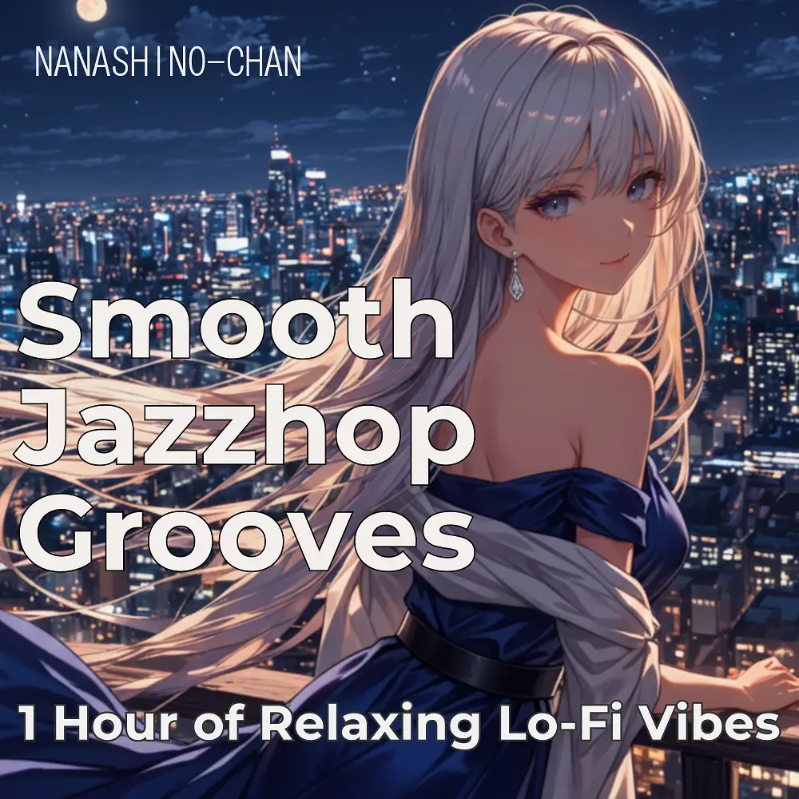

Jazzhop · Lo-Fi
Smooth Jazzhop Grooves: 1 Hour of Relaxing Lo-Fi Vibes
Nanashino-chan
Explore Smooth Jazzhop Grooves: 1 Hour of Relaxing Lo-Fi Vibes by Nanashino-chan: 25 instrumental tracks spanning Jazzhop / Lo-Fi. Start with Smooth Beginnings / Mellow Morning, preview the collection and find your favorites on streaming services.
2025-04-06 · Released · 25 tracks · Instrumental
Preview the album
The jacket stays here until you choose a track. Playback uses YouTube.
YOUTUBE PREVIEW
Choose a track to listen
The jacket stays here until you choose a track. Playback uses YouTube.
If playback is unavailable, open the album or track on the streaming service.
Find this album on streaming services
Links marked “search” open search results. Select the album or track on the service.
Track list 25
- 01Smooth Beginnings
- 02Mellow Morning
- 03Gentle Groove
- 04Piano Reflections
- 05Soft Sax Vibes
- 06Groovy Chill
- 07Relaxing Riffs
- 08Sunset Melodies
- 09Vinyl Warmth
- 10Cozy Beats
- 11Urban Flow
- 12Midnight Mellow
- 13Jazzhop Serenity
- 14Golden Hour Grooves
- 15Calm Currents
- 16Saxophone Serenity
- 17Smooth Waves
- 18Tranquil Tones
- 19Chill Nightfall
- 20City Lights Vibes
- 21Peaceful Jazzhop
- 22Gentle Reflections
- 23Cool Breeze Beats
- 24Evening Grooves
- 25Final Flow
Find a sound for your next post
Copy “Nanashino-chan + track title” and paste it into your social app’s music search. Availability depends on your region and account. Copying the name does not grant usage rights.